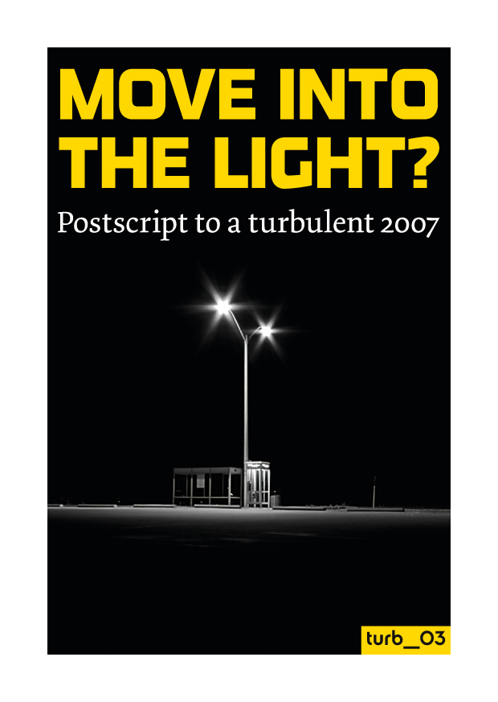

Move into the light? Introduction
Postscript to a turbulent 2007
An Introduction: Where to begin?

Recently, Alan Badiou, Etienne Balibar, Michael Hardt, Frederic Jameson, Antonio Negri and Slajov Zizeck (amongst other writers) have all published on the contemporary applicability of Lenin’s political thought and philosophy. Yet none of these thinkers are associated with the ‘dogmas’ and ‘vulgarities’ of the classical Marxism that characterised the Second and Third Internationals. Contrary to Werner Bonefeld and Sergio Tischler’s assessment that ‘Leninism has fallen on hard times’,[1] perhaps the Boshevik leader is back in fashion. Is red the new black?
For many of these authors, the ‘return’ to Lenin is not particularly recent. What is new is the resonance it has found. One of the reasons for this might stem from a general recognition of the need – to paraphrase Mario Tronti – to do what Lenin did in England. That is, to strategically apply Marx’s critique of political economy to a particular and material situation. Or, in George Caffentzis’s words, to apply ‘Marxism to itself’.[2] When Lenin asked himself the question, ‘What is to be done?’, the answer he came up with – the construction of a particular form of revolutionary organisation, the vanguard party – arose out of a close examination of the political and economic situation in Russia and the composition of its embryonic working class. It was these conditions that determined the form required to most effectively create rupture within capital’s project. At our current historical conjuncture, where both neoliberalism and the movement(s) for alternative forms of globalisation find themselves in crisis, we need to return to this question. How can connections be made between the struggles of the vast multiplicity of productive singularities today? How can a single social actor be constituted out of these struggles, despite and beyond this heterogeneity? Is it even desirable to constitute a single social actor? Answers to these questions can only be found through an enquiry into the already existing social antagonisms and the extent to which they currently operate in common. This is what will necessarily be constituent of any new organisational forms. And the extent to which these forms are attuned to the global political and economic reality from which they seek to break will determine their potential.
Around six months before writing What is to be Done?, Lenin began with a more modest question, Where to Begin? – published in 1901. Central amongst the proposals made in this text was the establishment of an ‘all-Russian’ newspaper. ‘A newspaper’, Lenin explained, ‘is not only a collective propagandist and a collective agitator, it is also a collective organizer.’ He continued, ‘In this last respect it may be likened to the scaffolding round a building under construction, which marks the contours of the structure and facilitates communication between builders, enabling them to distribute the work and to view the common results achieved by their organized labour.’[3] Newspapers, magazines, and publishing projects, as well as conferences, gatherings, social forums and other events (can) continue to fulfill this function today. It is to this that the Turbulence project hopes to contribute.
Scaffolding, of course, makes no sense as an end in itself. It is an assemblage which needs to be bolted together carefully, with its form and pace of construction determined by the real productive process of building movements and struggles. On the one hand, if it starts to move too far or rapidly away from that whose construction it was designed to aid, it starts to become redundant. Yet on the other, a certain degree of distance can sometimes open up space for development or expansion in previously unforeseen directions. Because of course we don’t know what this construction will look like. We are neither architects nor bees.
The first appearance of the Turbulence project, was a 32-page newspaper containing 14 articles addressing the question, ‘What would it mean to win?’ This newspaper was distributed at the mobilisation against the 2007 G8 Summit in Heiligendamm, Germany, in June. The second was a workshop a few months later at the Camp for Climate Action, near Heathrow Airport in London. The third is the collectively written text, Move into the Light? Postscript to a turbulent 2007, reprinted below. Despite the different forms taken by each of these three interventions, their goal is the same: to open up a space for thinking through, debating and articulating the political, social, economic and cultural theories of our movements, as well as the networks of diverse practices and alternatives that surround them. The objective has been less to become another journal or newspaper offering a ‘snapshot of the movement’, and more to carve out a space in which we can carry out difficult debates and investigations into the political realities of our time. In doing this we hope to form one part of the scaffolding necessary for constructing organisational forms appropriate to today’s contemporary political and economic reality.
As such, we welcome comments and criticisms.
Turbulence Collective
December 2007
1 Werner Bonefeld and Sergio Tischler, ‘Introduction’ to Bonefeld and Tischler (eds), What is to be Done? Leninism, anti-Leninist Marxism and the question of revolution today (Aldershot, Hampshire: Ashgate, 2002)
2 George Caffentzis ‘Lenin on the Production of Revolutions’, in Bonefeld and Tischler (eds), What is to be Done?
3 Vladimir I. Lenin ‘Where to Begin?’ in Lenin Collected Works (Moscow: Foreign Languages Publishing House, 1961)
Originally published as an introduction to ‘Move into the Light? Postscript to a turbulent 2007’ in ephemera: theory and politics in organisation 7(4) www.ephemeraweb.org.
-
Who we are

Turbulence is a journal/newspaper that we hope will become an ongoing space in which to think through, debate and articulate the political, social, economic and cultural theories of our movements, as well as the networks of diverse practices and alternatives that surround them. Read more here
-
Turbulence on Myspace